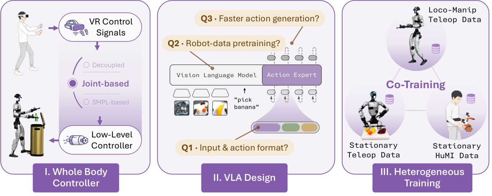

OpenHLM
人形全身策略的瓶颈不在模型规模，在遥操作接口暴露了哪些自由度、便宜数据补得上什么。
OpenHLM: An Empirical Recipe for Whole-Body Humanoid Loco-Manipulation
长程取果任务进度 87.5%，Ψ0 48.8%、GR00T N1.6 57.5%；演示时长 1.14 小时对两条基线的 2.70 小时。
01这篇要解决什么？
这篇把一条人形全身策略拆成可以逐个拨动的旋钮：遥操作接口、动作向量布局、主干从哪里初始化、便宜数据怎么混。对做编排的人，它给的是被调用那条策略的成本表——哪些能力靠现成预训练白拿，哪些必须自己采数据补。
02先看一个场景
让人形去踩开垃圾桶踏板再把瓶子扔进去。按常见做法，上半身由逆运动学驱动，下半身交给一条只收底盘速度与根部高度指令的控制器；这套接口里没有一维能表达抬脚踩下踏板，于是这项任务不是做得差，而是从构造上就做不出来。
03方法怎样运转？

- 01
先定接口：四种遥操作各暴露多少自由度
解耦控制 21 维：双臂 14、腰 3、根高 1、底盘速度 3，下肢归 RL 控制器；VR 三点 24 维，只给头与双腕位姿加导航；关节式全身 32 维，PICO 头显加身体追踪器采动作，经 GMR 重定向到 29 个关节；SMPL 式 81 维。四者共享同一套视觉与本体输入。
- 02
对比结果决定了后面所有实验的数据来源
表 1 里只有关节式把三项任务都做下来。解耦控制在可乐摆放上一趟走 42.3 步，是关节式 12.0 步的三倍，瓶子投放踩不了踏板，标为不可做；VR 三点则在罐前犹豫，时长涨到 67.8 秒、进度掉到 40%。另一面是货架取杯上解耦控制反而 93.3%，高于关节式的 80.0%。
- 03
VLA 怎么改：接口细节不是瓶颈，初始化才是
主干用 π₀.₅ 的公开检查点，内部架构不动。动作投影从 32 维扩到 34 维时做权重手术，保留前 32 维预训练权重；沿用预训练的双臂排布，腿、腰与根部姿态追加在末尾；预测绝对关节位置；本体状态作为输入。这四项各自翻转只掉几点，换成 PaliGemma 却掉到 60%。
- 04
便宜数据分两种，补的东西不一样
定点遥操作用同一台机器人、同一套关节式接口，只录站定不走的操作段，每项任务 40 条约 13 分钟；HuMI 是手持 UMI 夹爪加五个追踪器，机器人完全不在环里，40 条约 7 分钟，事后离线逆运动学抬成全身关节目标，动作还前移 0.2 秒对齐预览延迟。
- 05
评分：每次 rollout 打一个进度分，不是二值成功
每对策略与任务在真机上跑五次，五个初始摆放固定给所有策略共用。每项任务写好 3 到 5 分的评分细则，走位并返回起点算一分、抓对物体算一分、放到指定位置算一分，得分除以总分就是这一次的进度，论文报均值与标准误。摔倒或失去平衡如何计分，评分细则里没有写。
policy = pi05_checkpoint() # 现成：π0.5，预训练数据里没有任何人形数据
resize_action_proj(policy, 32 -> 34, mode="weight_surgery") # 保留前 32 维权重
train(policy,
data = whole_body_teleop(8 个训练任务, 每项 40 条) # 关节式 32 维 + 2 夹爪
+ stationary_teleop(4 个留出任务) 或 HuMI(4 个留出任务))
# AdamW, lr 1e-4, 30k 步, batch 128, 4 x A800 约 24 小时
while 任务未完成:
o = (头部鱼眼立体 + 双腕 RealSense, 34 维本体状态, 语言指令)
chunk = policy(o) # 50 步绝对关节目标，多步流匹配，不用单步
for a in chunk[:25]: # 执行 25 步后重新推理，约每 5/6 秒一次
sonic_tracker(a) # 现成跟踪器出关节目标，PD 跟踪，平衡归它
# 没有成功检测器；抓空只能靠下一帧重新预测。评分在环外按细则打进度分方法与结果的原文定位见本页引用。
04跟着这个场景走一遍
教学推演：回到上面的场景。第一步，能不能踩踏板在接口那一步就定了：解耦控制给的是 21 维，腰与双臂加一个根高、一个底盘速度，腿上没有可写的量；关节式全身给的是 32 维，14 个手臂关节、12 个腿关节、3 个腰关节再加根部姿态，抬脚这件事才有地方表达。第二步，表 1 的证据不只是能不能做：解耦控制走同一段路花了 42.3 步，关节式只要 12.0 步；VR 三点在可乐罐前犹豫，时长涨到 67.8 秒。但另一面也要记住——货架取杯上解耦控制反而是 93.3%，高于关节式的 80.0%。第三步，模型这一侧的改动其实很小：π₀.₅ 的检查点照用，动作投影从 32 维扩到 34 维时保留前 32 维权重，腿腰与根部姿态追加在末尾，预测绝对关节位置。这四项各翻一项只掉几点，换成 PaliGemma 掉到 60%，随机初始化掉到 42%，所以真正吃紧的是机器人预训练本身。第四步，新物体和新指令不必再采全身遥操作：定点遥操作 40 条 13 分钟，HuMI 40 条 7 分钟，后者机器人完全不在环里，动作还要事后逆运动学抬成全身关节目标。两者都能补上语义，只有定点遥操作补得上倒水这种新动作。第五步，成绩按细则打进度分，走位并返回算一分、抓对算一分、放准算一分。这里要停一下：评分细则里没有摔倒这一条；长程对比里两条基线吃的是解耦控制采的演示，Ψ0 还被改接到 GR00T 的解耦栈上，那张表同时换了模型与接口两个变量。
05实验到底表现怎样？
HLM-12 是这篇自带的真机基准，12 项语言条件任务分四个能力族；路线图前段只用其中 4 项做消融，全套 VLA 定下来后扩到 8 项训练任务，共训阶段再加 4 项留出任务。表 2 换成另一项长程取果任务，20 对水果里均匀抽 10 对各跑一次。
作者报告的实验结果 · v1
| 表 2 · 长程取果任务 | 进度 | 演示时长 |
|---|---|---|
| Ψ0 | 48.8 ± 4.4% | 2.70 小时 |
| GR00T N1.6 | 57.5 ± 4.6% | 2.70 小时 |
| OpenHLM（HuMI 共训） | 87.5 ± 3.7% | 1.14 小时 |
| OpenHLM（遥操作上限） | 97.5 ± 1.7% | 2.73 小时 |
原始证据：遥操作接口对比：§3.1、表 1 ↗ · VLA 设计与异构共训：§3.2、§3.3 ↗ · 长程系统级对比：§4、表 2 ↗ · HLM-12 任务与评分细则：附录 A.1 ↗
87.5% 与上限 97.5% 之间还差 10 个点，而这 10 个点买的是 1.6 小时操作时间。更该记住的是两条基线的失败方式：它们走一条刻板的手臂轨迹，不跟语言指定的水果走；Ψ0 还在高架前停下，说明差距不只出在抓取。
06收益来自哪里，又停在哪里？
消融与机制证据
图 5 的三组消融方向并不一致：接口四项各自翻转只掉几点，预训练这一项从 π₀.₅ 的 91% 掉到 PaliGemma 的 60%、随机初始化的 42%。单步生成的验证动作 MSE 反而更低，约 0.007 对 0.009，真机上却掉约 20 个点。
结论的适用边界
模型来源分得很清楚：π₀.₅ 的公开检查点、SONIC 全身运动跟踪器、GMR 重定向、PICO4U 与 HuMI 硬件全是现成件，而 π₀.₅ 的预训练数据里没有任何人形数据；作者训练的只有那一次微调，AdamW、3 万步、批 128、4 张 A800 约 24 小时。真正的前提成本是演示本身——每项任务 40 条关节式全身遥操作，熟练操作者约 1.5 小时。两处可比性要自己扣住。一是系统级对比里，GR00T N1.6 与 Ψ0 吃的是解耦控制采的 120 条演示，Ψ0 还被改接到 GR00T 的解耦栈上跑，作者说明这是为了避免再采一轮数据，于是那张表同时混进了模型与遥操作接口两个变量。二是 OpenHLM 那 1.14 小时里有 84 条来自 HuMI，与遥操作不是同类数据，时长不能当作同质预算直接比。另有没写清的地方：§3.1 说高层指令频率约 10 Hz，附录 C.4 却写成按 30 Hz 生成 50 步动作块、每 5/6 秒推理一次；评分细则里没有摔倒或失去平衡的条目；结论也承认只在 Unitree G1 上验证过。
07放回全书的脉络
对照 π₀.₅ 与 RT-2：同样是训练配方，这里多出来的变量是接口暴露多少自由度，以及便宜数据只补语义还是也补动作。
08把阅读变成一个小研究
给自己的策略画一张表：动作向量每一维由谁产生，哪几维在评测里其实从未被真正用到。
先自己回答：这项实验怎样才有解释力？
常见结果是有若干维一直是常数或被控制器覆盖。这类维度让动作空间看起来更大，却不改变可达行为，也让跨论文的维度对比失去意义。
- 用自己的话说出这篇改变了哪个模块。
- 画出它的输入、输出和一次失败如何被处理。
- 复述一个结果，同时说清基线、指标与实验条件。这一问不给答案，材料在第 05 节。
先自己答，再看前两问的参考答案
这篇改了哪个模块改的是策略本身与它的数据来源，不是在策略外面加编排。动作向量从 21 维解耦指令换成 34 维全身关节目标，腿、腰与根部姿态第一次进入策略的输出；主干仍是现成的 π₀.₅，架构不动，只在投影层做权重手术。被换掉的另一半是数据：关节式全身遥操作取代了逆运动学加速度指令，定点遥操作与 HuMI 这两种便宜流混进同一个训练集，不改模型结构。SONIC 跟踪器、GMR 重定向与 PD 跟踪这一段全程没动，平衡仍由跟踪器负责。
输入、输出与一次失败如何被处理输入是头部鱼眼立体相机与两只腕部 RealSense 的图像、34 维本体状态（布局与动作向量一致）以及一句语言指令；四种遥操作接口共用同一套视觉与本体格式，区别只在动作那一侧。输出是一段 50 步的绝对关节目标动作块，34 维里前 32 维是双臂、双腿、腰部关节与根部 roll、pitch 和偏航角速度，后 2 维是两只平行夹爪；附录写的是按 30 Hz 生成、执行最多 25 步后重新推理，也就是每 5/6 秒一次。动作块交给 SONIC 全身跟踪器，再由 PD 控制器落到关节上，平衡与落脚由跟踪器自己处理。失败通路在这套系统里是隐式的：没有成功检测器，也没有恢复子目标，抓空之后策略只能在新观测上重新预测。论文给的证据是 π₀.₅ 初始化的策略会流畅地重抓，而 PaliGemma 初始化的很少从失败抓取里恢复——这条闭环纠错行为来自预训练数据，不是系统里某个模块。评分则完全在环外：人按细则给这次 rollout 打一个进度分。
人形全身策略的瓶颈不在模型规模，在遥操作接口暴露了哪些自由度、便宜数据补得上什么。
↗带着位置回到原文
首发日期用于时间排序；以下方法与结果对应 v1。数据为论文作者报告，本讲义没有独立复现实验。
QA就这一页提问或讨论
对某个数字、某条边界或某个推演有疑问，欢迎直接留言：讨论按页面分开，回复会保留在 XinrunXu/awesome-agentic-robotics-papers 的 Discussions 里，需要一个 GitHub 账号。